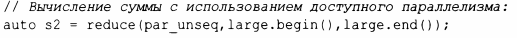

⇐14.3 Числовые алгоритмы 14.4 Комплексные числа⇒
В заголовочном файле <numeric> числовые алгоритмы имеют немного различающиеся параллельные версии (§ 12.9).
| Параллельные числовые алгоритмы | |
|---|---|
| x=reduce(b,e,v) | x=accumulate (Ь, е, v), за исключением порядка вычислений |
| x=reduce(b,e) | x=reduce ( Ь, е, v { } ) , где v -тип значения |
| x=reduce(pol,b,e,v) | x=reduce (Ь, е, v) со стратегией выполнения pol |
| x=reduce(pol,b,e) | x=reduce (pol, Ь, е, V {}),где V -тип значения Ь |
| p=exclusive_scan (pol,b,e,out) | p=partial_sum (Ь, е, out) в соответствии со стратегией pol, исключая i-й элемент из i-й суммы |
| p=inclusive_scan (pol,b,e,out) | p=partial_sum (Ь, е, out) со стратегией выполнения pol и включением i-го элемента в i-ю сумму |
| p=transform_reduce (pol,b,e, f,v) | f (х) для каждого х из [Ь:е], затем reduce |
| p=transform_exclusive scan(pol,b,e,out,f,v) | f (х) для каждого х из [Ь:е], затем exclusive_scan |
| p=transform_inclusive_scan(pol,b,e,out,f,v) | f (х) для каждого х из [Ь:е], затем inclusive_scan |
Для простоты я не показал версии алгоритмов, которые принимают в качестве аргумента функтор, а не просто используют + и =. За исключением reduce (), я также не показал версии со стратегией выполнения по умолчанию (последовательное выполнение) и значением по умолчанию.
Так же, как и для параллельных алгоритмов в заголовочном файле <algorithrn> (§12.9), мы можем определить стратегию выполнения:
Параллельные алгоритмы (наnример, reduce ()) отличаются от nоследовательных (наnример, accumulate ())тем, что доnускают выnолнение оnераций над элементами в неоnределенном nорядке.